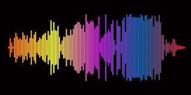
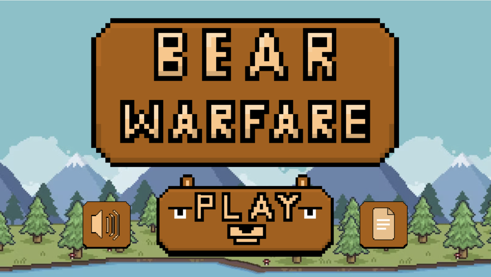
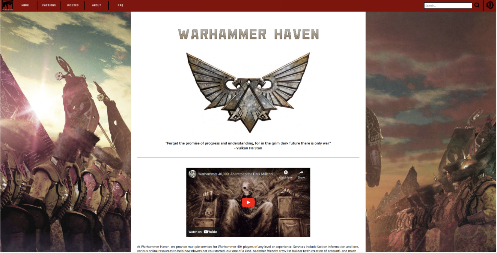

Music Genre Classification

This group project focused on classifying music genres using deep learning techniques, including both LSTM and Transformer-based models. We began by preprocessing raw audio data into mel spectrograms to better represent frequency and time-based patterns within the music. To improve generalization and model robustness, we applied data augmentation techniques such as time shifting, noise injection, and pitch alterations.
Throughout the project, we trained and evaluated the models using performance metrics like accuracy, confusion matrices, and loss curves. The LSTM was effective in capturing temporal patterns, while the Transformer architecture offered advantages in parallel processing and learning long-range dependencies.
The project provided hands-on experience with sequential data processing, model tuning, and cross-validation, as well as collaboration in a machine learning pipeline from data preprocessing to model deployment. This application of deep learning in audio classification highlighted the challenges and possibilities of using neural networks in creative and complex domains.
Bear Warfare

This group project involved developing a web-based, turn-based strategy game inspired by the mechanics of Worms, where players control bears using projectile-based attacks. Built using the Phaser JavaScript game framework and hosted locally with XAMPP, the game integrated technologies including HTML/CSS for the interface and Git for version control.
The project provided experience with JavaScript-based game logic, player input handling, and implementing turn-based mechanics. In addition to strengthening front-end development skills, the project offered practical exposure to local server setup, collaborative development workflows, and the coordination of multiple technologies within a browser-based game environment.
Warhammer Haven

This group project focused on building a Warhammer-themed website that allowed users to explore lore for each faction and create custom army lists. The site was developed using HTML, CSS, and JavaScript, with XAMPP providing the local server environment and PHP handling back-end functionality and database integration. Key features included dynamic content loading, interactive UI components, and a streamlined system for saving and managing user-created army lists.
This project offered valuable experience with full-stack development and deepened my understanding of how front-end and back-end technologies work together. From designing the interface to managing dynamic data flow through PHP and MySQL, the project sharpened my problem-solving skills and strengthened my ability to build interactive, data-driven web applications.